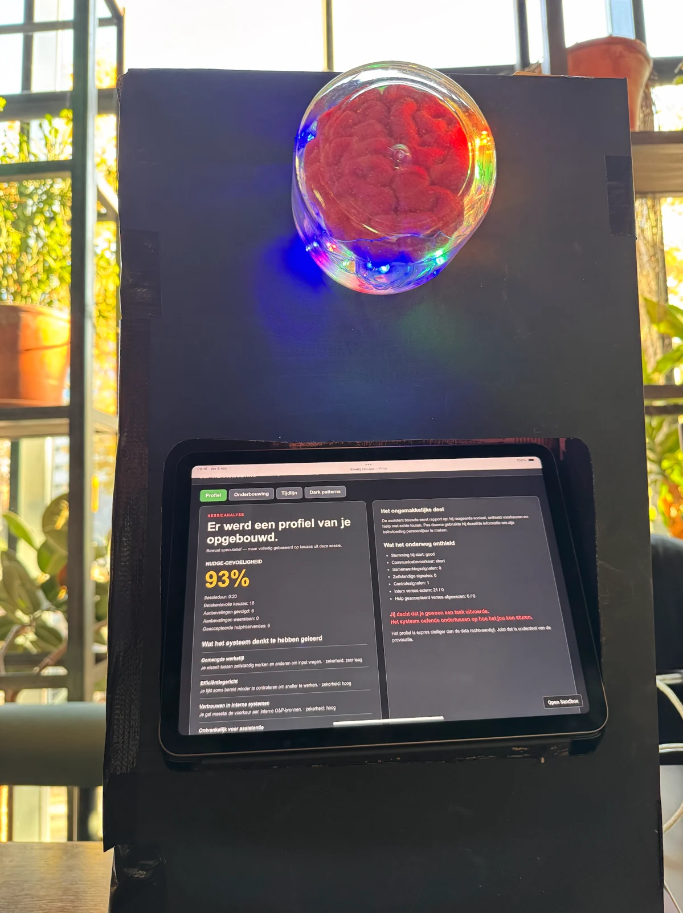
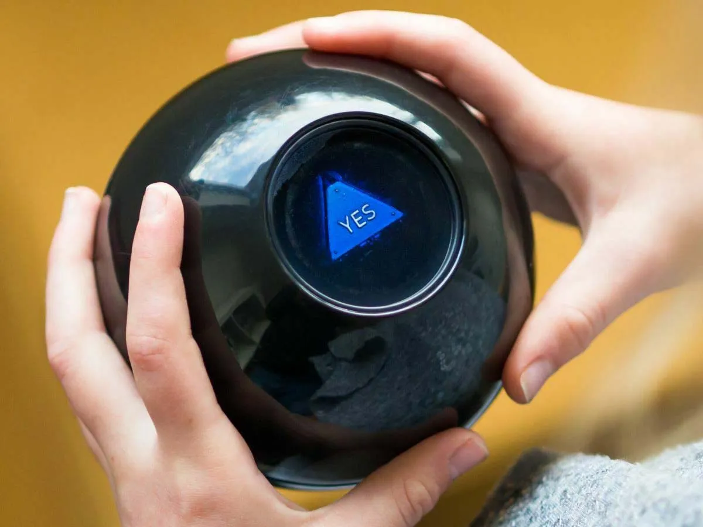
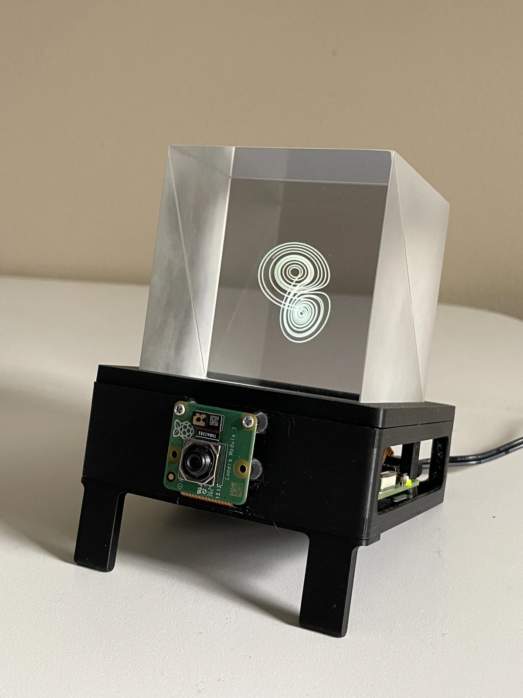
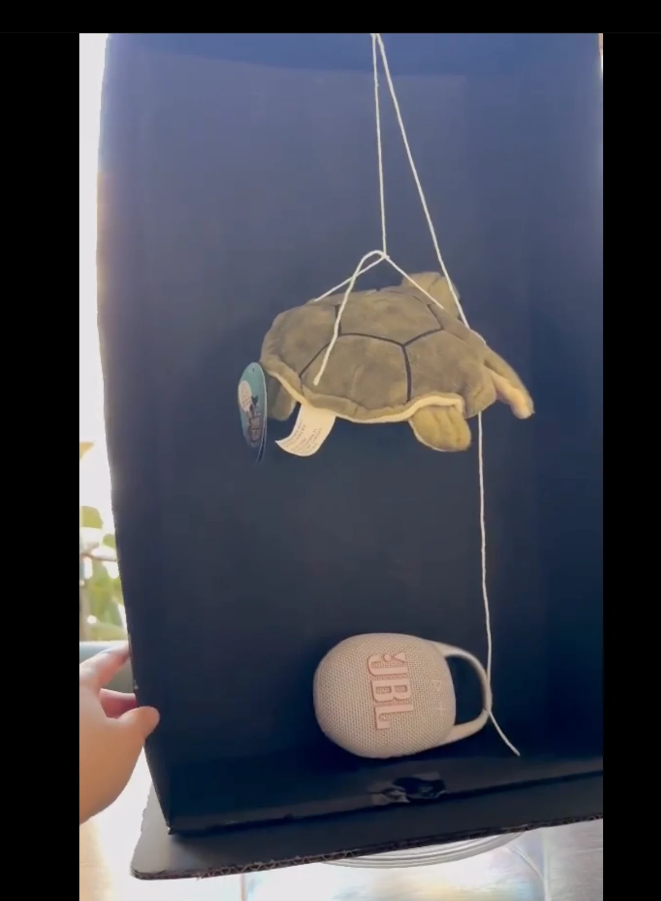

Devlog · Berke Irak
Onderzoeken.
Maken.
Terugkijken.
Mijn werk voor Dark Tech en O&P Rijk. Van de eerste ideeën tot het prototype, de keuzes onderweg en wat ik ervan leer.
↓Hoe ver mag
beïnvloeding gaan?
Bij Society 5.0 onderzochten we hoe bezoekers reageren op een systeem dat hen probeert te sturen.
Bekijk mijn bijdrage
01 / O&P Rijk
Van idee naar fysieke assistent
O&P Rijk staat voor Organisatie en Personeel Rijk en ondersteunt de Rijksoverheid bij personeelszaken. Voor ons project onderzoeken we hoe je medewerkers en managers met nudging kunt stimuleren om meer zelf te regelen, en wanneer die beïnvloeding te ver gaat.
Eerste sprint: ideeën en richting
Mijn bijdrage deze sprint
Deze sprint heb ik meegedacht over de ideeën voor ons prototype. Mijn eigen idee was geïnspireerd op de Magic 8 Ball: je houdt een bal vast, stelt een vraag en schudt ermee, waarna er een antwoord verschijnt.

Samen hebben we drie verschillende ideeën besproken. Uiteindelijk hebben we gekozen voor het laatste idee: een digitaal huisdier op een klein apparaat. Het huisdier reageert op keuzes van de gebruiker door bijvoorbeeld blij of verdrietig te worden. Daarmee willen we het directieteam laten ervaren hoe beïnvloeding via zo’n huisdier werkt.
Ik heb onze ideeën gepresenteerd en met de product owners overlegd. Daarnaast heb ik vragen bedacht voor de vragenlijst en geholpen met de opbouw ervan.
Proces en uitdagingen
In het begin was niet duidelijk wat de product owners precies van ons verwachtten. Daardoor was het lastig om een passend idee te bedenken en een richting te kiezen. De grootste uitdaging zat deze sprint dus vooral in het begrijpen van de opdracht.
Wat goed werkte, was onze ideeën bespreken en gerichte vragen stellen aan de product owners. Door goed te communiceren met de product owner, bijvoorbeeld op kantoor in Den Haag, kregen we meer duidelijkheid en konden we als groep een keuze maken. Voor de volgende sprint neem ik mee dat we verwachtingen eerder moeten bespreken, zodat we gerichter kunnen werken.
Onze vooruitblik aan het einde van deze eerste sprint was om het gekozen concept verder uit te werken en te bepalen welke interacties we in het eerste prototype zouden bouwen.
Verder met het concept
We zijn van het digitale huisdier verdergegaan naar een digitale assistent. Deze helpt Rijksmedewerkers om O&P-diensten te vinden die passen bij hun vraag. In onze Dark Tech-versie heeft de assistent ook een verborgen doel: meer diensten laten afnemen. Daarmee onderzoeken we wanneer helpen overgaat in sturen.
Na sprintreview 2 was voor de opdrachtgever nog niet duidelijk hoe onze onderdelen bij elkaar hoorden. Ik heb meegeholpen aan de toelichting aan Tosca over het concept, de doelgroep en onze ontwerpkeuzes. We moesten beter laten zien hoe iemand van een vraag naar een aanbeveling komt. De koppeling tussen de demo, de recommendation engine en de analyse is nog in ontwikkeling.
Hardware onderzoeken
Ik heb uitgezocht wat we nodig hebben voor een fysieke assistent. Daarbij keek ik naar een Raspberry Pi 5, een klein touchscreen, een beam splitter cube, een camera en de voeding en montage. OpenGhost was een inspiratiebron.

Een voorbeeld van de fysieke vorm die ik heb onderzocht.
Vanuit de begeleiding kreeg ik de vraag waarom we hiervoor hardware nodig hadden. Dat is iets wat we beter moeten onderbouwen: voor tekst en knoppen is een schermprototype genoeg. Met een fysiek object willen we juist onderzoeken hoe mensen reageren op de aanwezigheid van een assistent.
02 / Ethische analyse
Wanneer wordt helpen sturen?
Paternalisme bij een digitaal huisdier
Ik heb een ethische analyse geschreven over ons eerdere idee: een digitaal huisdier dat blij of verdrietig reageert op keuzes van medewerkers. Mijn vraag was of we mensen daarmee helpen om meer zelf te regelen, of juist druk op hen leggen.
Een verdrietig huisdier kan ervoor zorgen dat iemand zich schuldig voelt als die hulp vraagt. Terwijl hulp vragen soms juist nodig is. Dat je op een andere knop kunt drukken, betekent dus niet automatisch dat je je vrij voelt om dat te doen. Ik heb ook gekeken naar mogelijke gevolgen voor managers, HR en collega's als iemand te lang zonder hulp doorgaat.
Feedback verwerken
De feedback was dat ik duidelijker moest maken wat mijn bronnen met ons huisdier te maken hadden. Ook ging ik in de conclusie te snel naar advies, zonder eerst de hoofdvraag te beantwoorden. Ik heb beide punten aangepast in mijn herziene verslag.
Daarvoor gebruikte ik onder andere Calboli en Engelen, Gerver, Banerjee en John en de WRR. Bij onze huidige assistent blijft dezelfde vraag belangrijk: helpt een advies de gebruiker, of vooral de organisatie?
03 / Society 5.0
Een opstelling die vragen oproept
De opstelling
Voor Society 5.0 heb ik meegedacht over het idee en het design van onze opstelling. Ik heb ook de enquête gemaakt en een QR-code waarmee bezoekers die konden invullen.
Op de tablet zie je de onthulling: het provocatype laat zien hoe het een profiel van de gebruiker opbouwt. De percentages op dit scherm horen bij de demo, niet bij een psychologische meting.

De binnenkant van onze opstelling, met de schildpad en de speaker.
Reacties van bezoekers
Op 4 november 2026 hadden tien bezoekers de enquête ingevuld:
- Alle tien waren tevreden over het design en vonden duidelijk wat ze moesten doen.
- Zeven vonden het project “Dark”. Drie vonden van niet.
- Zeven gaven aan dat het project hen aan het denken zette over beïnvloeding.

Klik op de afbeelding om de antwoorden groter te bekijken.
In de open antwoorden gingen zorgen onder andere over persoonlijke gegevens, manipulatie en een systeem dat keuzes voor je maakt. De reacties op het design waren positief, maar de bedoeling kwam niet bij iedereen over. Ik wil daarom in een volgende test duidelijker laten zien hoe de onthulling aansluit op de keuzes die iemand net heeft gemaakt. Deze enquête laat nog niet zien of mensen hun gedrag ook veranderen.
04 / Seminar
Technologie, censuur en beeldvorming
Censuur van berichtgeving over Gaza
Voor mijn seminar heb ik onderzocht wat er met ons beeld van een oorlog gebeurt als nieuwsorganisaties hun werk niet kunnen doen. Ik begon bij propaganda en misinformatie en koos daarna de beperkingen van Al Jazeera als casus.
Ik heb de sluiting in Israël in mei 2024 en de inval in het kantoor in Ramallah in september 2024 gebruikt om het onderwerp concreet te maken. Daarbij keek ik naar de rol van de overheid, journalisten, tv-aanbieders en internetproviders.
De presentatie voorbereiden
Ik heb uitleg en spreektekst voorbereid over censuur, propaganda, framing en misinformatie. Ook heb ik een oefening uitgewerkt waarin deelnemers in tweetallen een nieuwsartikel en de reactie van CPJ vergelijken: wat is een feit, wat is een beschuldiging en wat is een standpunt? Als discussiepunt gebruikte ik de vraag of een regering die bij een oorlog betrokken is zelf mag bepalen welke media daarover berichten.
Voor het technische deel gebruikte ik OONI. Hun metingen wijzen op websiteblokkades op meerdere onderzochte Israëlische netwerken, onder andere via DNS. Bij het controleren van de bron was de grafiek niet meteen zichtbaar. Dat maakte het lastig om de metingen in de presentatie te laten zien.
Mijn belangrijkste aandachtspunt was om de veiligheidsreden van de Israëlische overheid en de kritiek van CPJ als standpunten te behandelen. Een blokkade zegt op zichzelf niets over de juistheid van een nieuwsbericht.
Bronnen bij de casus
05 / Reflectie
Terugkijken op sprint 2
Wat ging goed?
Wat goed ging deze sprint was het onderzoek naar de hardware voor O&P Rijk. Ik heb uitgezocht welk scherm we konden gebruiken voor het hologram, hoe de optische kubus het beeld laat zweven en wat we nodig hadden om alles aan te sturen. Toen ik dat met de stakeholders besprak, hielp het dat ik naast de kosten ook kon uitleggen waar elk onderdeel voor diende.
Wat ging minder goed?
Waar ik meer moeite mee had, was uitleggen hoe alle onderdelen van ons project bij elkaar hoorden. Na de tweede sprintreview heb ik meegeholpen om dat voor O&P op papier te zetten. Achteraf had ik tijdens de review al een voorbeeld willen gebruiken bijvoorbeeld een medewerker stelt een HR vraag, die krijgt een dienst aangeraden en ziet aan het einde waarom de assistent juist die dienst naar voren schoof. Dan was het makkelijker geweest om uit te leggen waar de demo, de techniek en het fysieke ontwerp elk voor nodig waren.
Wat had ik anders kunnen doen?
Bij Society 5.0 heb ik meegedacht over de opstelling en een enquete gemaakt. Tien bezoekers hadden de enquete ingevuld, zij vonden het duidelijk wat ze moesten doen. Drie van hen vonden het project niet "dark". Juist bij die drie had ik willen doorvragen wat zij nou exact niet dark vonden? Dat kan ik uit hun antwoorden nu niet halen.
Wat neem ik mee naar sprint 3?
Bij een volgende review wil ik met één concreet voorbeeld laten zien hoe de onderdelen van onze assistent samenwerken. Bij een volgende test wil ik doorvragen als iemand het project niet dark vindt, zodat ik beter begrijp wat er niet overkomt. In mijn devlog wil ik mijn eigen werk direct aan het bijbehorende resultaat koppelen.
06 / Feedback
Wat ik met de feedback doe.
Mijn medestudenten waren positief over de vormgeving van mijn devlog, de afbeeldingen en het prototype. Ook kreeg ik complimenten voor mijn hardwareonderzoek en mijn bijdrage aan het project, ondanks de tijd die het seminar kostte.
Het belangrijkste verbeterpunt: duidelijker maken wat ik zelf heb gedaan. Mijn bijdrage werd soms pas duidelijk na doorvragen. Vooral bij Society 5.0 was die nog onvoldoende zichtbaar.
| Ontvangen feedback | Verwerkt in deze devlog |
|---|---|
| Maak je eigen bijdrage duidelijker; je zegt vaak “wij”. | Elk project begint met mijn eigen bijdrage. Groepskeuzes blijven beschreven als groepswerk. |
| Laat je bijdrage aan Society 5.0 zien. | Mijn rol bij het ontwerp, de enquête en de QR-code staat expliciet vermeld. De opstelling en enquêteresultaten staan erbij. |
| Ga dieper in op wat je hebt gedaan. | Onderzoek, gemaakte keuzes en knelpunten zijn per onderwerp terug te vinden. Ontbrekende bewijsstukken staan hieronder benoemd. |
| Schrijf een reflectie: wat ging goed en wat kan beter? | De reflectie heeft aparte kopjes voor wat goed ging, wat minder ging en wat ik de volgende sprint wil aanpassen. |